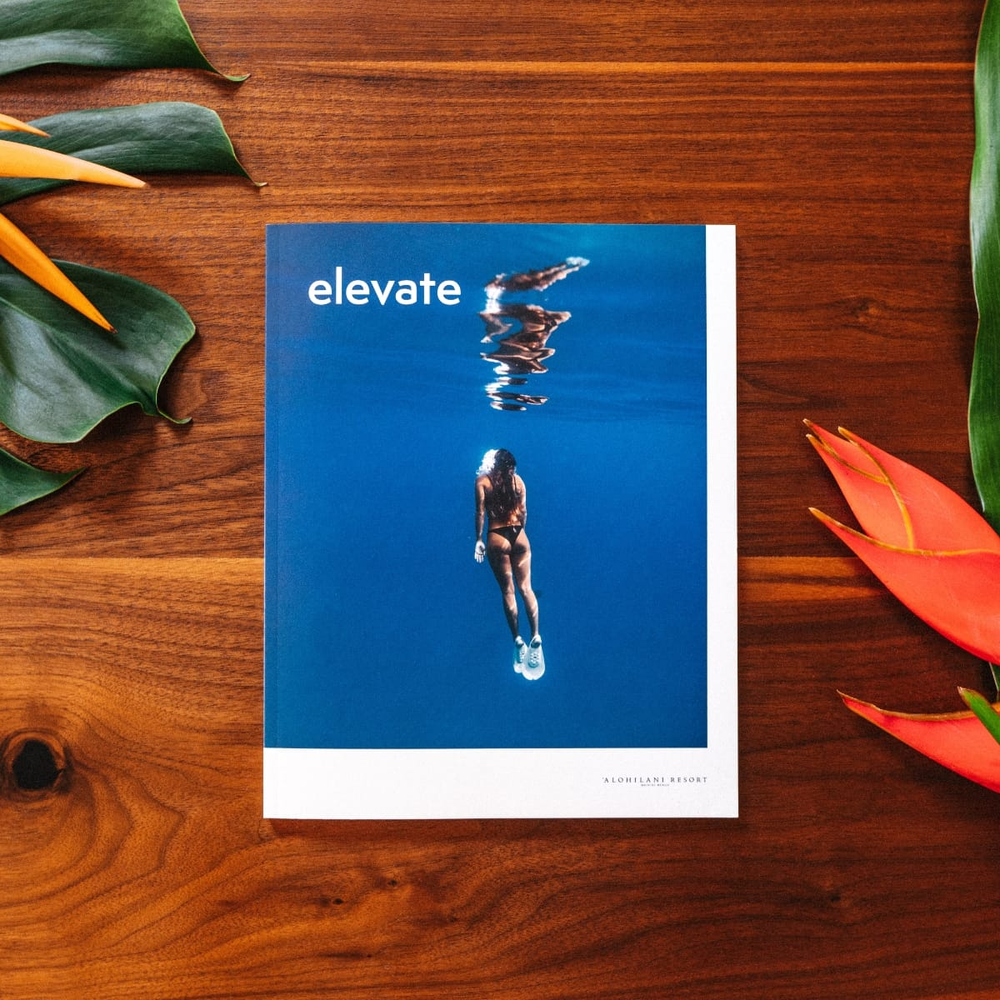
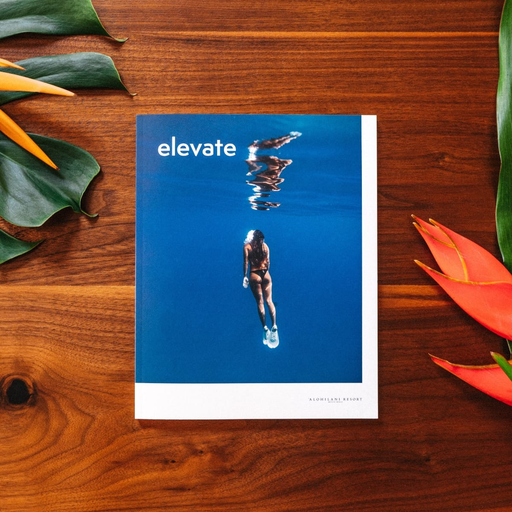

Hymnals are books with collections of musical hymns that can typically be found in churches. Prayerbooks or missals are books that contain written prayers and are commonly carried by monks, nuns, and other devoted followers or clergy. Lap books are a learning tool created by students.
There are several other types of books which are not commonly found under this system. Albums are books for holding a group of items belonging to a particular theme, such as a set of photographs, card collections, and memorabilia. One common example is stamp albums, which are used by many hobbyists to protect and organize their collections of postage stamps. Such albums are often made using removable plastic pages held inside in a ringed binder or other similar holder. Picture books are books for children with pictures on every page and less text (or even no text).
 

Publishers may produce low-cost, pre-publication copies known as galleys or ‘bound proofs’ for promotional purposes, such as generating reviews in advance of publication. Galleys are usually made as cheaply as possible, since they are not intended for sale.
Dummy books (or faux books) are books that are designed to imitate a real book by appearance to deceive people, some books may be whole with empty pages, others may be hollow or in other cases, there may be a whole panel carved with spines which are then painted to look like books, titles of some books may also be fictitious.
The longer I live, the more I realize that I am never wrong about anything, and that all the pains I have so humbly taken to verify my notions have only wasted my time!
The advent of paperback books in the 20th century led to an explosion of popular publishing. Paperback books made owning books affordable for many people. Paperback books often included works from genres that had previously been published mostly in pulp magazines. As a result of the low cost of such books and the spread of bookstores filled with them (in addition to the creation of a smaller market of extremely cheap used paperbacks) owning a private library ceased to be a status symbol for the rich.

In recent years, the book had a second life in the form of reading aloud. This is called public readings of published works, with the assistance of professional readers (often known actors) and in close collaboration with writers, publishers, booksellers, librarians, leaders of the literary world and artists.
This form of the book chain has hardly changed since the eighteenth century, and has not always been this way. Thus, the author has asserted gradually with time, and the copyright dates only from the nineteenth century. For many centuries, especially before the invention of printing, each freely copied out books that passed through his hands, adding if necessary his own comments. Similarly, bookseller and publisher jobs have emerged with the invention of printing, which made the book an industrial product, requiring structures of production and marketing.
Paper was first made in China as early as 200 BC, and reached Europe through Muslim territories. At first made of rags, the industrial revolution changed paper-making practices, allowing for paper to be made out of wood pulp. Papermaking in Europe began in the 11th century, although vellum was also common there as page material up until the beginning of the 16th century, vellum being the more expensive and durable option.


{kind=link}